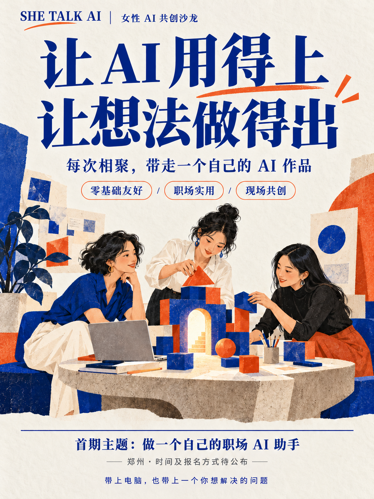

MON → FRI本周的事，理清楚了。 ✓
周报整理助手
把零散的工作记录，整理成结构清晰的周报。保留事实，也看见自己的成果。
适合：每周都要整理工作的人你的经验，值得成为一个产品的起点。
带一个工作问题来，和女性伙伴一起，
做出第一个属于自己的 AI 作品。
零基础友好 ／ 职场实用 ／ 现场共创

01 / WHY WE GATHER
作为SHE Talk AI主理人，连接对 AI 充满好奇的女性，一起学习、实践、共创，让每次相聚都带走一个自己的 AI 作品。
我们希望，女性能够平等地
参与 AI 时代的创造。
SHE TALK AI 是一个从郑州出发的女性 AI 共创空间。无论你从事什么工作、有没有技术背景，都可以带着一个真实的问题来。
我们一起拆解需求、动手制作、互相测试，让工具帮上忙，也让你的专业经验和生活观察，成为创造的起点。
找到一起动手的伙伴 ↗02 / THE FIRST GATHERING
首期筹备中
郑州 · 时间与具体场地待公布
从每天重复的那件小事开始。选一个方向，完成一个可复用、经过测试的初版。
把零散的工作记录，整理成结构清晰的周报。保留事实，也看见自己的成果。
适合：每周都要整理工作的人从会议纪要中提取待办，标出负责人和时间。没有说清的部分，留给人来确认。
适合：经常开会、推进项目的人先厘清目标、受众和限制，再搭出框架。让你的判断，带着 AI 一起工作。
适合：需要写方案、做策划的人以上为首期拟定任务方向，图示为示意。最终安排随活动通知公布。
03 / MAKE IT YOURS
先把一个小问题做好。
然后，继续改进它。
从你熟悉的工作场景出发，把需求说具体。
借助模板和现场支持，完成自己的初版。
用样例检验结果，知道哪里需要人工核对。
保存作品、提示词和使用说明，继续尝试。
这是我做的，
我还可以继续创造。
04 / BEFORE YOU COME
可以。首期按零基础友好的方向筹备，会提供示范、起步模板和现场支持。具体工具与账号准备要求将在活动前说明。
笔记本电脑、充电器，以及一个想解决的工作问题。练习请使用虚构或脱敏资料，不携带公司机密和客户隐私。
首场在郑州，目前时间、具体场地、费用与名额尚未确定。可以先加入活动群或添加主理人了解后续通知；进群不代表已报名成功。
可以从一个可复用的个人助手或工作流开始。我们会关注它能否解决具体问题、是否经过测试、你是否知道怎么继续使用和修改。
你可以选择不被拍摄。作品分享、照片拍摄与公开传播会分别征求同意，尊重每个人的意愿与创作。
LET'S MAKE SOMETHING.
郑州的女性创作者们，我们线下见。
先加主理人，或加入活动群，关注首场通知。